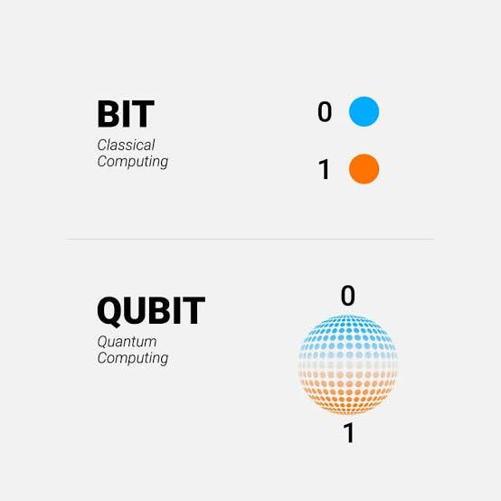
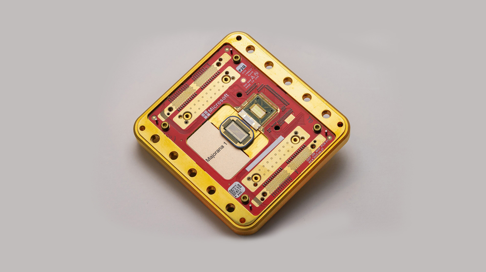
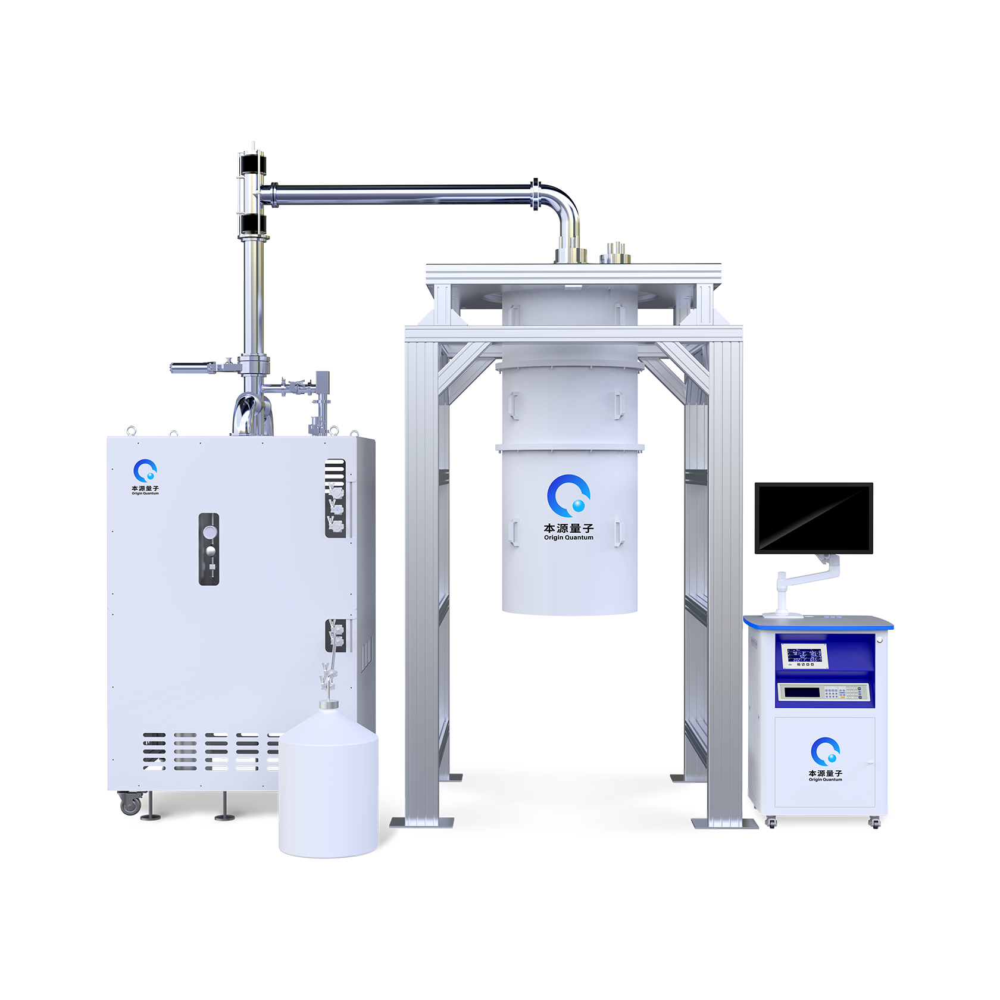
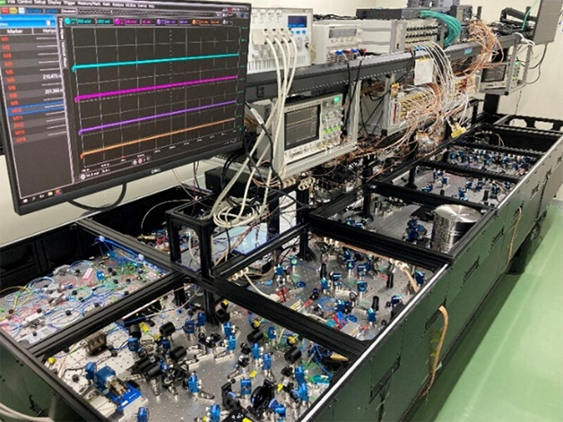
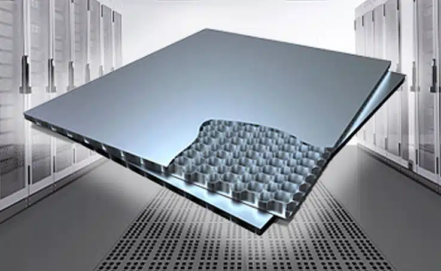
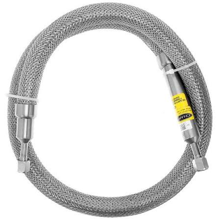
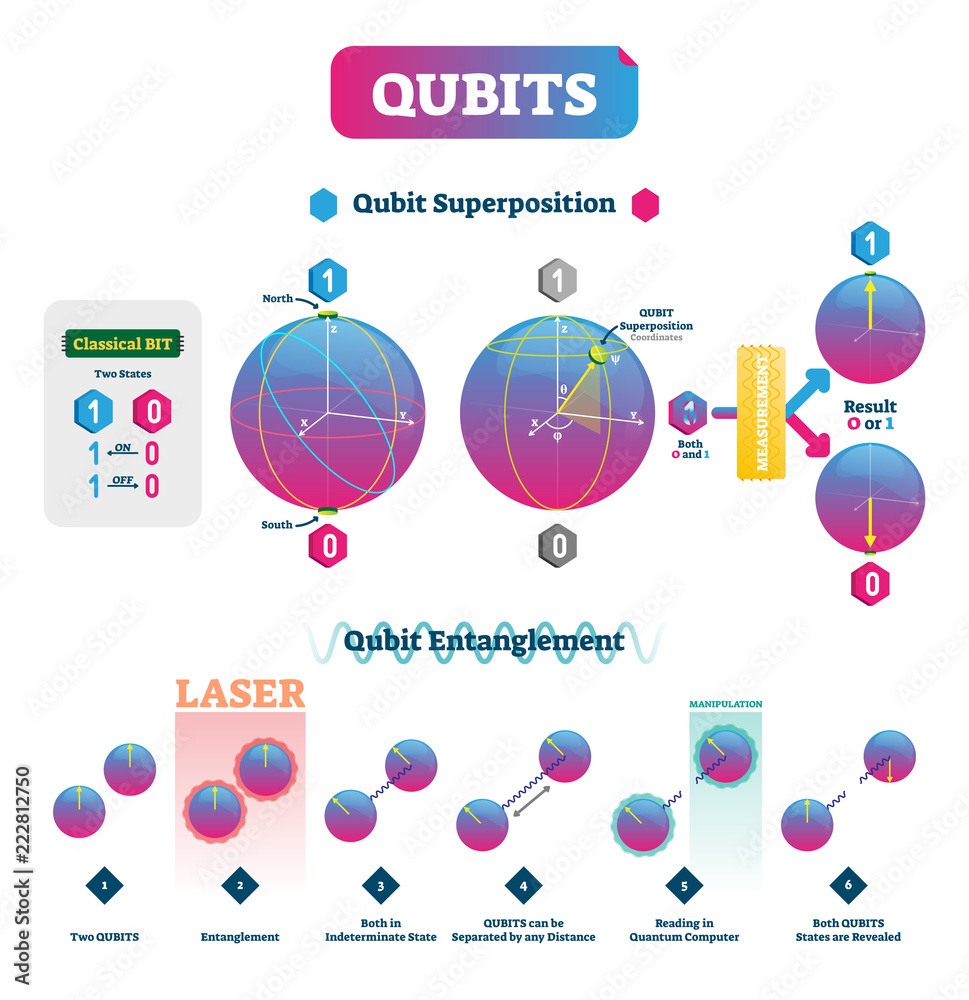

| Cúbits (bits cuánticos) | Unidade básica de información que almacena datos mediante superposición e entrelazamiento. |
| Chip / Procesador cuántico | Microchip onde se sitúan físicamente os cúbits. |
| Refrixerador de dilución | Sistema crioxénico que enfría o procesador case ata o cero absoluto (-273 °C) para evitar errores térmicos. |
| Electrónica de control | Dispositivos a temperatura ambiente que envían sinais (como microondas) para manipular os cúbits. |
| Blindaxe electromagnética | Capas protectoras que aíllan o chip de interferencias externas e ruído magnético. |
| Cableado crioxénico | Conexións especiais que comunican o exterior co chip interno minimizando a entrada de calor. |
| Stack de software | Programas, compiladores e sistemas operativos cuánticos que traducen os algoritmos a sinais físicas. |






